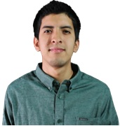

Bienvenido
|  | Mi nombre es Giancarlo Padilla, tengo 29 años y soy egresado de la carrera de comunicación audiovisual, actualmente he regresado a estudiar con el objetivo de incrementar mis conocimientos y obetner mi bachiller. He trabajado en diferentes instituciones donde me he destacado en la post producción, VFX y colorización. Me gusta el stop motion y volar drone, trato de innovar con el contenido y los efectos que uso. Sí quieres innovar con tu contenido, aqui te dejo mi correo para que puedas contactarme giancarloaudiovisual@gmai.com |
 |
Dinamica 1: El profesor nos forma grupos de 5, con la intencion de que cada uno fuera de diferentes carreras, nos mando elegir un a un logo que nos represente como grupo, nos mostro unas referencias, y nos dijo que el logo que eligeramos , que tenia que tener ciertas especificaciones para poder imprimirlo en 3D, "no tener huecos" "no tener trazos abiertos", mi grupo eligio unas alas , dibujamos las alas en una hoja y se la pasamos al profesor, luego de un rato, salio nuestras alas impresas |
 |
Dinamica 2: A mi grupo le tocó la ods de agua limpia y sana metiendo, nos tocó buscar referencias en países donde hayan invertido en el tema del agua , y ponerlos como referencias, cada grupo hizo su exposion y trató de vender su idea a los demás países |
 |
Dinamica 3: El profesor nos dia una hoja a cada uno, y nos dijo que hiciéramos una idea de proyecto, y plasmarlo en la hoja, cada uno dibujó un tipo de invento , yo por ejemplo hice unos lentes de realidad virtual , que con la ayuda de unos totems , estos escaneaban el ambiente y hacían un lectura completa de la habitación y te hacía mas pequeño, esto también podría usarse en la medicina mencione , mi compañero sixto expuso mi idea , la expuso muy bien al igual que los demás compañeros |